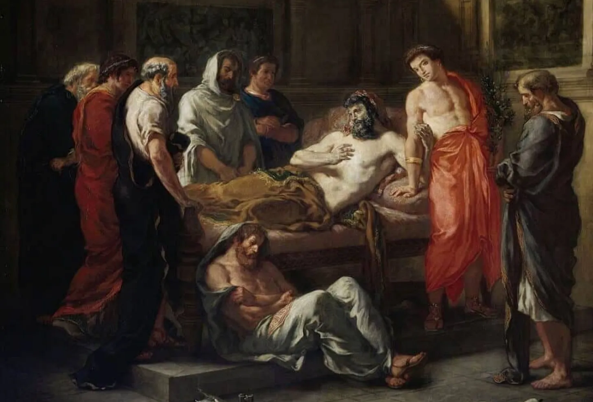

History teaches us that Marcus Aurelius never checked a notification in his life. No buzzing phone, no algorithm fighting for his attention, no endless scroll. He ruled an empire, fought on distant frontiers, and still began his mornings by writing quiet notes to himself — reminders on how to stay sane in an insane world.
What is wild is how well those notes fit the world we live in now.
The Stoics built their entire philosophy around a single distinction:
Some things are in our control. Most things are not.
- Weather, politics, other people's opinions, the whims of an algorithm — all outside our control.
- Our reactions, our judgments, our choices — those are ours.
And the Stoics argued that happiness depends on focusing on the second list, not the first.
A Framework for Any Age of Disruption
When I first read Epictetus, what struck me was not how ancient the ideas were — but how usable they felt. Stoicism does not require predicting the future or understanding every force acting on you. It just asks you to sort life into two columns:
What is mine. What is not..
That is a framework which works as well for AI as it did for Roman generals.
"Men are disturbed not by the things which happen, but by the opinions about the things." — Epictetus, Enchiridion
Think about how we experience an algorithmic feed. It watches what we click, how long we pause, what we ignore — and then decides what to show us next.
We do not control any of that.
But we do control the moment after:
Do I follow this recommendation, or not?
That tiny moment is where Stoicism lives.
The Inner Citadel and the Outer Feed

Last Words of the Emperor Marcus Aurelius by Eugene Delacroix
Marcus Aurelius called it the inner citadel — the part of us that can pause before reacting. Today we would call it executive function. Whatever the name, it is the mental space between stimulus and response.
Every notification is a stimulus.
Every headline, every suggestion, every AI-generated reply.
The citadel is the part of us that chooses whether to react automatically or respond deliberately.
The Stoics were not naive. Epictetus lived as a slave; he knew how small the circle of control can be. His point was not that the circle is large — only that it is enough.
What We Owe the Machine
There is one place where the Stoics did not give us a full blueprint: collective responsibility.
Stoicism is mostly about personal ethics — how I govern myself.
But AI is not personal. It is built from millions of people personal data and affects back the same millions of lives.
To live well with AI, we may need a kind of civic Stoicism — a shared responsibility for the systems we build and the incentives we allow. The fence of control might need to expand from my choices to our choices.
And yet, when I close the laptop, silence the phone, and sit with my morning coffee, I still return to Marcus Aurelius:
"You have power over your mind, not outside events. Realize this, and you will find strength."Two millennia of noise, and the sentence still holds.